What it is
Pocket Shark is a full 3D pool game, 8-ball, 9-ball and a practice table, with a physics model honest enough that the balls slide, roll, take english, throw each other off line, and rattle in the jaws.
Three things make it more than another pool app. A shark that does not guess: it plays every candidate shot forward on a copy of the table and ranks them by how likely they drop and where the cue ball ends up. Shark Eyes, which does the same thing on a real table you are standing at, from a photo or straight through the live camera. And a story mode that stakes a bankroll against six house players and lets you fix up the basement with what you win.
The whole thing is a single HTML page with one dependency, three.js. No account, no network after it loads, installable to your home screen.
How it is built
A real table, 500 steps a second
A hand-written physics engine: sliding and rolling friction, follow, draw and side english, ball-to-ball throw, cushion rebound and pocket jaws, stepped with exact time-of-impact so nothing tunnels.
The shark actually solves it
For every ball and pocket it tries direct shots, banks, kicks and combos, measures how much aiming error each one forgives, and ranks by make-probability and resulting position. No lookup tables.
Shark Eyes reads a real table
Point the live camera at a table, or load a photo, drop four dots on the corners, and a homography plus camera solve lifts the layout off the image so the same shark can rank your shots, drawn back on your own view. It all runs on the phone.
Four rooms, one engine
The basement, the rail bar, the pool hall and the arena are each built from scratch, their own lights, props and baked reflections, and swapped live without a reload.
Story mode with real stakes
A bankroll, a buy-in at every table, and a six-rung ladder from Dot on the bar box to Silas in the arena. Winnings fix up the basement you practice in, light, floor, then the whole room.
One page you can install
Everything is inlined into a single file, with a web manifest, a service worker and an icon set, so it installs to the home screen and launches offline like a native app.
The house
Six players, one per level, each with their own way of missing and their own story. Beat one and the next sits down.
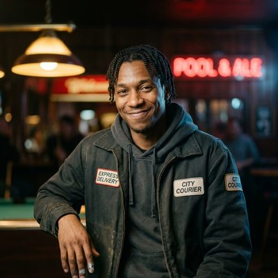
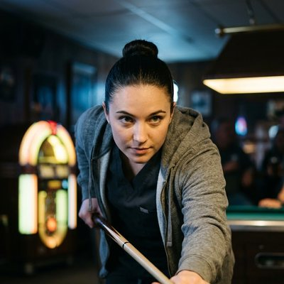
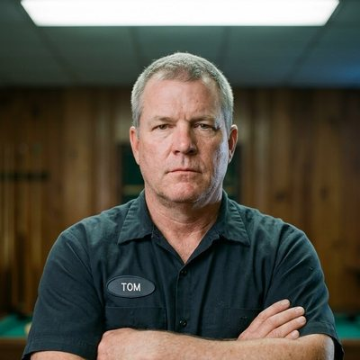
The rooms you climb through
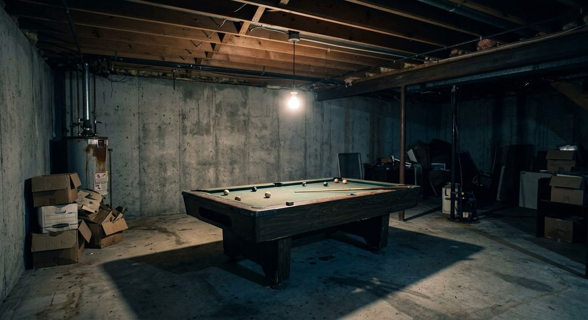
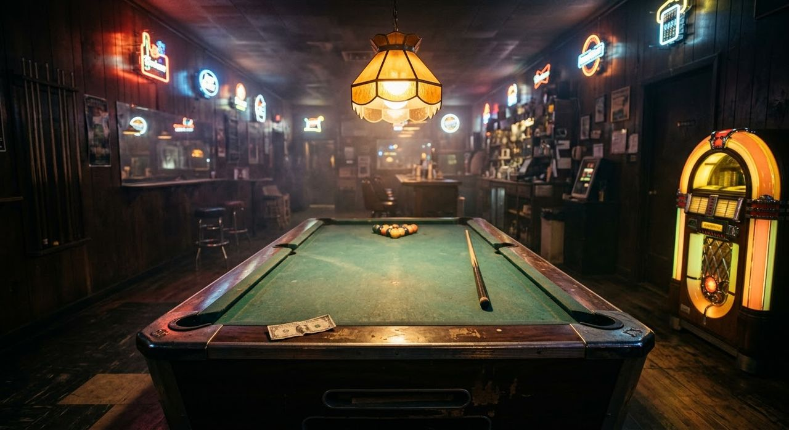
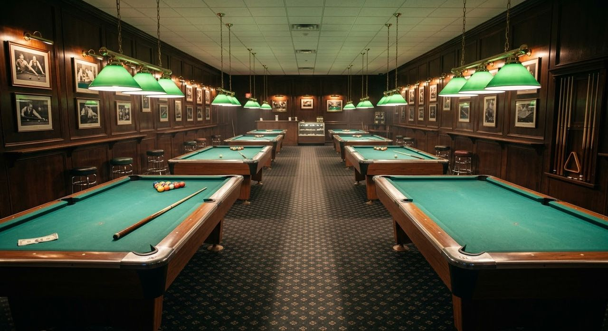
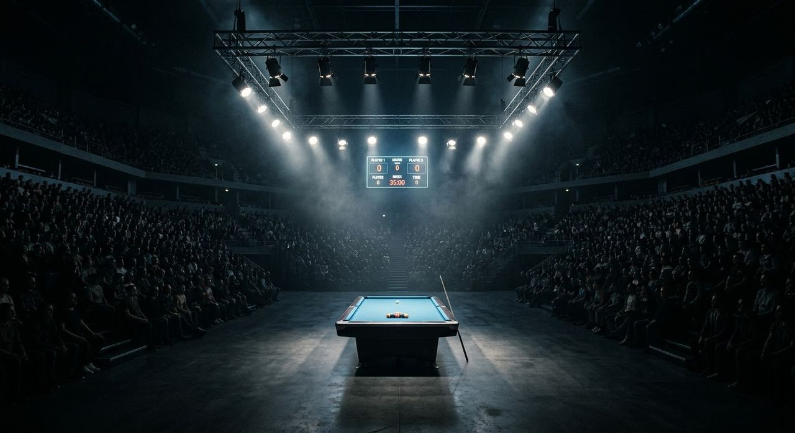
Inside the build
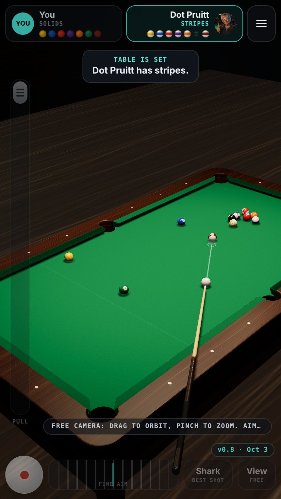
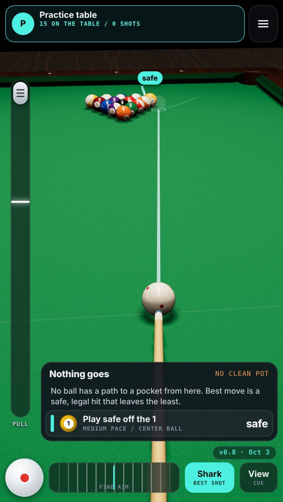
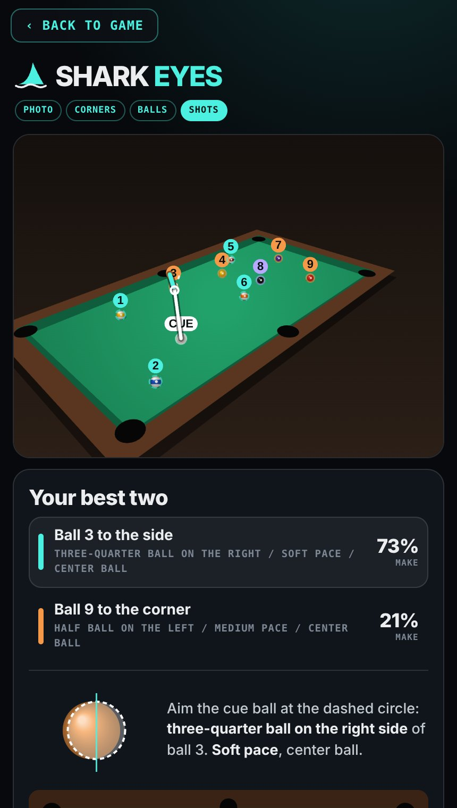
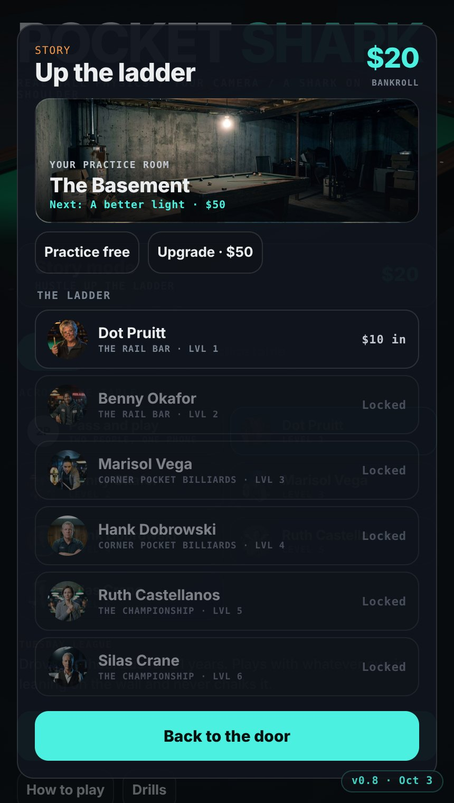
Version history
- v1.2 — the Fin Stack wordmark on the menu
- v1.1 — eighteen achievements and a career-stats record screen
- v1.0 — deeper story, five unlockable cues, tappable opponent bios
- v0.9 — Shark Eyes gains a live-camera viewfinder, not just a photo
- v0.8 — story mode and the bankroll, six house players with portraits, basement upgrades, installable PWA, this build log
- v0.7 — the teaching layer: a first-run walkthrough, a how-to-play deck, and five drills
- v0.6 — folded the game and the scanner into one file; became Pocket Shark
- v0.5 — Shark Eyes: photograph a real table and get your shots back on the photo
- v0.4 — four rooms with their own lights, props and reflections; the aperture table
- v0.2–0.3 — the weight pass: hop, gravity, rolling sound, shake, table-feel presets
- v0.1 — the physics engine and the shark; 8-ball and 9-ball